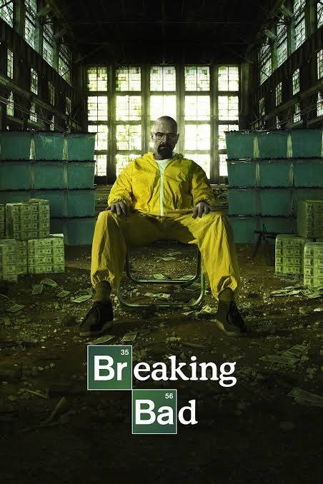
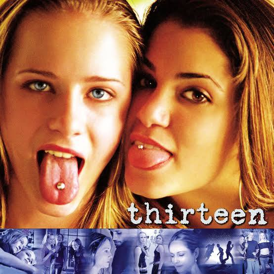

Muitas poucas coisas me agradam quando estamos falando de filmes ou séries, e as poucas que me agradaram significam o mundo pra mim. Eu adoro filmes que contem assuntos polêmicos, e é esse meu gosto para filmes.


Eu recomendo MUITO assistir Breaking Bad, no começo pode ser chato mas a série vai se construindo ao longo do tempo e virando uma coisa mirabolante e incrível e muito cativante de assistir. Concerteza é minha série favorita de todos os tempos.